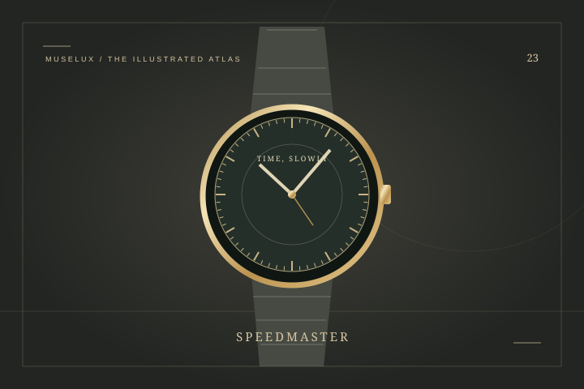

WATCHES / THE CATEGORY
在机芯之外，读见时间的审美。
STORIES TO BEGIN WITH
机械、石英与智能，哪个适合自己？先别急着选阵营，把注意力放回每天抬起手腕的那个动作。
THE CLASSICS, EXPLAINED
从潜水工具，读见清晰的力量。

一枚计时表，陪人走过更远的路。
让两条平行线，定义时间的形状。
全部文章可直接阅读；搜索、筛选与订阅演示需要启用 JavaScript。